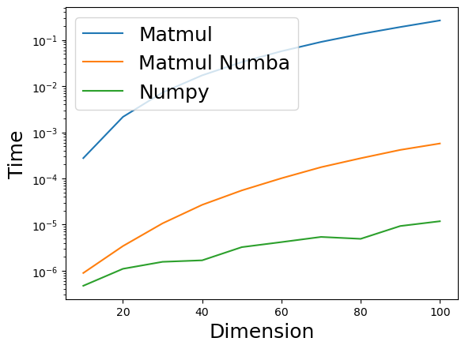

from IPython.display import YouTubeVideo
YouTubeVideo("7HF5Oy8IMoM")Краткое содержание предыдущих лекций/семинаров
- Арифметика с плавающей точкой и связанные с ней проблемы
- Устойчивые алгоритмы: обратная и прямая устойчивость
- Важнейшие матричные нормы: спектральная и норма Фробениуса
- Унитарные матрицы сохраняют эти нормы
- Существуют два “базовых” класса унитарных матриц: матрицы Хаусхолдера и Гивенса
Примеры пиковой производительности
Flops –– операции с плавающей точкой в секунду.
Giga = 2^{30} \approx 10^9,
Tera = 2^{40} \approx 10^{12},
Peta = 2^{50} \approx 10^{15},
Exa = 2^{60} \approx 10^{18}
Какова пиковая производительность:
- Современного CPU
- Современного GPU
- Самого мощного суперкомпьютера в мире?
Тактовая частота процессора и производительность в флопс
FLOPS = сокеты * (ядра на сокет) * (количество тактов в секунду) * (количество операций с плавающей точкой за такт).
- Обычно количество сокетов = 1
- Количество ядер обычно 2 или 4
- Количество тактов в секунду - это знакомая тактовая частота
- Количество операций с плавающей точкой за такт зависит от конкретного процессора
- Современный CPU (Intel Core i7) –– 400 Гфлопс
- Современный GPU Nvidia DGX H100 – зависит от точности!
- Самый мощный суперкомпьютер в мире –– 1.102 Экзафлопс/с –– пиковая производительность
Умножение матрицы на вектор (matvec)
Умножение матрицы A размера n\times n на вектор x размера n\times 1 (y=Ax):
y_{i} = \sum_{j=1}^n a_{ij} x_j
требует n^2 умножений и n(n-1) сложений. Таким образом, общая сложность составляет 2n^2 - n = \mathcal{O}(n^2)
Насколько плохо \mathcal{O}(n^2)?
Пусть A - матрица попарного гравитационного взаимодействия между планетами в галактике.
Число планет в средней галактике составляет 10^{11}, поэтому размер этой матрицы 10^{11} \times 10^{11}.
Чтобы моделировать эволюцию во времени, мы должны умножать эту матрицу на вектор на каждом временном шаге.
Самые мощные суперкомпьютеры выполняют около 10^{16} операций с плавающей точкой в секунду (флопс), поэтому время, необходимое для умножения матрицы A на вектор, составляет примерно
\begin{align*} \frac{(10^{11})^2 \text{ операций}}{10^{16} \text{ флопс}} = 10^6 \text{ сек} \approx 11.5 \text{ дней} \end{align*}
для одного временного шага. Если бы мы могли умножать со сложностью \mathcal{O}(n), мы бы получили
\begin{align*} \frac{10^{11} \text{ операций}}{10^{16} \text{ флопс}} = 10^{-5} \text{ сек}. \end{align*}
Вот видео на YouTube, которое иллюстрирует столкновение двух галактик, смоделированное алгоритмом со сложностью \mathcal{O}(n \log n):
Можем ли мы побить \mathcal{O}(n^2)?
- В общем случае НЕТ.
- Дело в том, что у нас есть входные данные размера \mathcal{O}(n^2), поэтому нет способа быть быстрее для произвольной матрицы.
- К счастью, мы можем быть быстрее для определенных типов матриц. Вот несколько примеров:
- Простейший пример - матрица, состоящая из всех единиц, которую можно легко умножить, используя только n-1 сложений. Эта матрица имеет ранг один. В более общем случае мы можем быстро умножать матрицы малого ранга (или матрицы, имеющие блоки малого ранга)
- Разреженные матрицы (содержат \mathcal{O}(n) ненулевых элементов)
- Структурированные матрицы:
- Фурье
- Циркулянтные
- Теплицевы
- Ганкелевы
Произведение матриц
Рассмотрим композицию двух линейных операторов:
- y = Bx
- z = Ay
Тогда z = Ay = A B x = C x, где C - это произведение матриц.
Произведение матрицы на матрицу (ММ): классика
Определение. Произведение матрицы A размера n \times k и матрицы B размера k \times m - это матрица C размера n \times m с элементами c_{ij} = \sum_{s=1}^k a_{is} b_{sj}, \quad i = 1, \ldots, n, \quad j = 1, \ldots, m
Для m=k=n сложность наивного алгоритма составляет 2n^3 - n^2 = \mathcal{O}(n^3).
Обсуждение матричного умножения
Произведение матриц является основой почти всех эффективных алгоритмов в численной линейной алгебре.
По сути, все алгоритмы плотной численной линейной алгебры сводятся к последовательности матричных произведений.
Эффективная реализация матричного умножения снижает сложность численных алгоритмов на тот же коэффициент.
Однако реализация матричного умножения совсем не проста!
Эффективная реализация матричного умножения
В1: Легко ли умножать матрицу на матрицу наиболее эффективным способом?
Ответ: нет, это непросто
Если вы хотите сделать это максимально быстро, используя имеющиеся компьютеры.
Демонстрация
Давайте сделаем короткую демонстрацию и сравним процедуру np.dot(), которая в моем случае использует MKL, с написанной вручную подпрограммой умножения матриц на Python, а также с ее версией на numba.
import numpy as np
def matmul(a, b):
n = a.shape[0] # размер первой размерности матрицы a
k = a.shape[1] # размер второй размерности матрицы a
m = b.shape[1] # размер второй размерности матрицы b
c = np.zeros((n, m)) # создаем матрицу нулей размера n x m
for i in range(n): # проходим по строкам результирующей матрицы
for j in range(m): # проходим по столбцам результирующей матрицы
for s in range(k): # суммируем произведения элементов
c[i, j] += a[i, s] * b[s, j]
return c # возвращаем результат умножения матрицimport numpy as np
from numba import jit # Компилятор "на лету" для Python, см. http://numba.pydata.org
@jit(nopython=True)
def numba_matmul(a, b):
n = a.shape[0]
k = a.shape[1]
m = b.shape[1]
c = np.zeros((n, m))
for i in range(n):
for j in range(m):
for s in range(k):
c[i, j] += a[i, s] * b[s, j]
return cТеперь мы просто сравним время вычислений.
Попробуйте угадать ответ.
n = 100
a = np.random.randn(n, n)
b = np.random.randn(n, n)
%timeit matmul(a, b)
%timeit numba_matmul(a, b)
%timeit a @ b265 ms ± 854 μs per loop (mean ± std. dev. of 7 runs, 1 loop each)
572 μs ± 997 ns per loop (mean ± std. dev. of 7 runs, 1,000 loops each)
10.5 μs ± 69.7 ns per loop (mean ± std. dev. of 7 runs, 100,000 loops each)Is this answer correct for any dimensions of matrices?
import matplotlib.pyplot as plt
%matplotlib inline
dim_range = [10*i for i in range(1, 11)]
time_range_matmul = []
time_range_numba_matmul = []
time_range_np = []
for n in dim_range:
print("Dimension = {}".format(n))
a = np.random.randn(n, n)
b = np.random.randn(n, n)
t = %timeit -o -q matmul(a, b)
time_range_matmul.append(t.best)
t = %timeit -o -q numba_matmul(a, b)
time_range_numba_matmul.append(t.best)
t = %timeit -o -q np.dot(a, b)
time_range_np.append(t.best)Dimension = 10
Dimension = 20
Dimension = 30
Dimension = 40
Dimension = 50
Dimension = 60
Dimension = 70
Dimension = 80
Dimension = 90
Dimension = 100plt.plot(dim_range, time_range_matmul, label="Matmul")
plt.plot(dim_range, time_range_numba_matmul, label="Matmul Numba")
plt.plot(dim_range, time_range_np, label="Numpy")
plt.legend(fontsize=18)
plt.xlabel("Dimension", fontsize=18)
plt.ylabel("Time", fontsize=18)
plt.yscale("log")
Почему наивная реализация медленная?
Она медленная из-за двух проблем:
- Она не использует преимущества быстрой памяти (кэша) и архитектуры памяти в целом
- Она не использует доступные возможности параллелизации (особенно важно для GPU)
Архитектура памяти

- Быстрая память маленькая
- Большая память медленная
Типичные характеристики иерархии памяти
| Тип памяти | Размер | Время доступа | Примечания |
|---|---|---|---|
| Регистры CPU | Несколько КБ | <1 нс | Самые быстрые, прямой доступ CPU |
| Кэш L1 | 32-64 КБ | 1-4 нс | Разделен на кэш инструкций и данных |
| Кэш L2 | 256 КБ - 1 МБ | 4-10 нс | Единый кэш |
| Кэш L3 | 2-32 МБ | 10-20 нс | Общий между ядрами CPU |
| Оперативная память (RAM) | 8-32 ГБ | 100 нс | Основная системная память |
| SSD | 256 ГБ - 2 ТБ | 10-100 мкс | Быстрое вторичное хранилище |
| Жесткий диск | 1-10 ТБ | 5-10 мс | Самый медленный, но самый большой |
Ключевые наблюдения: - Время доступа увеличивается примерно в 10 раз на каждом уровне - Размер увеличивается в 10-100 раз на каждом уровне - Эффективное использование более быстрых уровней памяти критично для производительности
Кэш-линии и когерентность кэша
- Кэш-память организована в кэш-линии - блоки фиксированного размера (обычно 64 байта)
- Когда CPU нужны данные, он загружает всю кэш-линию, содержащую эти данные
- Это эффективно при последовательном доступе к памяти (пространственная локальность)
Когерентность кэша обеспечивает: - Все ядра CPU видят согласованное представление памяти - Когда одно ядро изменяет данные, другие ядра получают уведомление - Предотвращает состояния гонки и несогласованность данных
Почему это важно для матричных операций: - Последовательный доступ к строкам/столбцам матрицы влияет на использование кэш-линий - Плохое использование кэш-линий = больше кэш-промахов = более низкая производительность
- Многопоточный код требует когерентных кэшей для корректности
Архитектура памяти GPU
Современные GPU имеют иную иерархию памяти по сравнению с CPU:
| Тип памяти | Размер | Время доступа | Примечания |
|---|---|---|---|
| Регистры | ~4 МБ на SM | ~1 такт | Самые быстрые, на поток/блок |
| Разделяемая память/Кэш L1 | 64-256 КБ на SM | ~20-30 тактов | Общая в пределах блока потоков |
| Кэш L2 | 512КБ - 60МБ | ~200 тактов | Общий для всего GPU |
| Глобальная память (VRAM) | 16-80 ГБ | ~400-600 тактов | Основная память GPU |
| Системная память (RAM) | 8-128 ГБ | >1000 тактов | Память CPU, доступ через PCIe |
Ключевые отличия от CPU: - Гораздо более параллельный доступ (тысячи потоков) - Больший файл регистров, но меньшие кэши - Более высокая пропускная способность памяти, но выше латентность - Критически важен объединенный доступ к памяти
Шаблоны доступа к памяти: - Объединенный: потоки в варпе обращаются к последовательной памяти = быстро - С шагом/случайный: потоки обращаются к разрозненной памяти = медленно - Конфликты банков разделяемой памяти могут ограничивать пропускную способность
Лучшие практики: - Использовать разделяемую память для часто используемых данных - Обеспечивать объединенный доступ к глобальной памяти - Минимизировать передачу данных между CPU и GPU
Примечание: Последний GPU NVIDIA H100 может иметь до 80ГБ памяти HBM3 VRAM
Как сделать алгоритмы более вычислительно интенсивными
Реализация в NLA: использовать блочные версии алгоритмов.
Этот подход является основой BLAS (Basic Linear Algebra Subroutines), написанной много лет назад на Фортране и до сих пор управляющей вычислительным миром.
Разделим матрицу на блоки! Для иллюстрации рассмотрим разделение на блочную матрицу 2 \times 2:
A = \begin{bmatrix} A_{11} & A_{12} \\ A_{21} & A_{22} \end{bmatrix}, \quad B = \begin{bmatrix} B_{11} & B_{12} \\ B_{21} & B_{22} \end{bmatrix}
Тогда,
AB = \begin{bmatrix}A_{11} B_{11} + A_{12} B_{21} & A_{11} B_{12} + A_{12} B_{22} \\ A_{21} B_{11} + A_{22} B_{21} & A_{21} B_{12} + A_{22} B_{22}\end{bmatrix}.
Если A_{11}, B_{11} и их произведение помещаются в кэш-память (которая составляет 20 Мб (L3) для современного процессора Intel), тогда мы загружаем их в память только один раз.
BLAS
BLAS имеет три уровня: 1. BLAS-1, операции типа c = a + b 2. BLAS-2, операции типа умножения матрицы на вектор 3. BLAS-3, умножение матрицы на матрицу
В чем принципиальные различия между ними?
Основное различие заключается в соотношении количества операций и входных данных!
- BLAS-1: \mathcal{O}(n) данных, \mathcal{O}(n) операций
- BLAS-2: \mathcal{O}(n^2) данных, \mathcal{O}(n^2) операций
- BLAS-3: \mathcal{O}(n^2) данных, \mathcal{O}(n^3) операций
Почему BLAS так важна и актуальна?
- Современная реализация базовых операций линейной алгебры
- Предоставляет стандартные имена для операций в любых новых реализациях (например, ATLAS, OpenBLAS, MKL). Вы можете вызвать функцию умножения матрицы на матрицу (GEMM), связать свой код с любой реализацией BLAS, и он будет работать корректно
- Формулировка новых алгоритмов в терминах операций BLAS
- Существуют обертки для большинства популярных языков
Пакеты, связанные с BLAS
- ATLAS - Автоматически настраиваемое программное обеспечение для линейной алгебры. Оно автоматически адаптируется под конкретную архитектуру системы.
- LAPACK - Пакет линейной алгебры. Предоставляет операции линейной алгебры высокого уровня (например, факторизации матриц), основанные на вызовах подпрограмм BLAS.
- Intel MKL - Математическая библиотека ядра. Предоставляет реализацию BLAS и LAPACK, оптимизированную для процессоров Intel. Доступна в дистрибутиве Anaconda Python:
Более быстрые алгоритмы умножения матриц
Напомним, что умножение матрицы на матрицу требует \mathcal{O}(n^3) операций. Однако хранение требует \mathcal{O}(n^2).
Вопрос: возможно ли уменьшить количество операций до \mathcal{O}(n^2)?
Ответ: поиск алгоритма умножения матриц со сложностью \mathcal{O}(n^2) все еще не завершен.
Алгоритм Штрассена дает \mathcal{O}(n^{2.807\dots}) –– иногда используется на практике
Текущий мировой рекорд \mathcal{O}(n^{2.37\dots}) –– большая константа, непрактичен, основан на алгоритме Копперсмита-Винограда.
Он улучшил предыдущий рекорд (Уильямс 2012) на 3\cdot 10^{-7}
В статьях до сих пор изучается умножение матриц 3 \times 3 и интерпретируется с разных сторон (Heule, et. al. 2019)
Рассмотрим алгоритм Штрассена подробнее.
Наивное умножение
Пусть A и B - две матрицы размера 2\times 2. Наивное умножение C = AB
\begin{bmatrix} c_{11} & c_{12} \\ c_{21} & c_{22} \end{bmatrix} = \begin{bmatrix} a_{11} & a_{12} \\ a_{21} & a_{22} \end{bmatrix} \begin{bmatrix} b_{11} & b_{12} \\ b_{21} & b_{22} \end{bmatrix} = \begin{bmatrix} a_{11}b_{11} + a_{12}b_{21} & a_{11}b_{21} + a_{12}b_{22} \\ a_{21}b_{11} + a_{22}b_{21} & a_{21}b_{21} + a_{22}b_{22} \end{bmatrix}
содержит 8 умножений и 4 сложения.
Алгоритм Штрассена
В работе Gaussian elimination is not optimal (1969) Штрассен обнаружил, что можно вычислить C используя 18 сложений и только 7 умножений: \begin{split} c_{11} &= f_1 + f_4 - f_5 + f_7, \\ c_{12} &= f_3 + f_5, \\ c_{21} &= f_2 + f_4, \\ c_{22} &= f_1 - f_2 + f_3 + f_6, \end{split} где \begin{split} f_1 &= (a_{11} + a_{22}) (b_{11} + b_{22}), \\ f_2 &= (a_{21} + a_{22}) b_{11}, \\ f_3 &= a_{11} (b_{12} - b_{22}), \\ f_4 &= a_{22} (b_{21} - b_{11}), \\ f_5 &= (a_{11} + a_{12}) b_{22}, \\ f_6 &= (a_{21} - a_{11}) (b_{11} + b_{12}), \\ f_7 &= (a_{12} - a_{22}) (b_{21} + b_{22}). \end{split}
К счастью, эти формулы работают даже если a_{ij} и b_{ij}, i,j=1,2 являются блочными матрицами.
Таким образом, алгоритм Штрассена выглядит следующим образом. - Сначала мы разделяем матрицы A и B размера n\times n, n=2^d на 4 блока размера \frac{n}{2}\times \frac{n}{2} - Затем мы вычисляем умножения в описанных формулах рекурсивно
Это снова приводит нас к идее разделяй и властвуй.
Пример алгоритма Штрассена
Давайте перемножим две матрицы 2x2, используя метод Штрассена:
A = \begin{bmatrix} 2 & 3 \\ 4 & 1 \end{bmatrix}, \quad B = \begin{bmatrix} 5 & 7 \\ 6 & 8 \end{bmatrix}
Вычислим 7 произведений от f_1 до f_7:
\begin{align*} f_1 &= (2 + 1)(5 + 8) = 3 \cdot 13 = 39 \\ f_2 &= (4 + 1)(5) = 5 \cdot 5 = 25 \\ f_3 &= (2)(7 - 8) = 2 \cdot (-1) = -2 \\ f_4 &= (1)(6 - 5) = 1 \cdot 1 = 1 \\ f_5 &= (2 + 3)(8) = 5 \cdot 8 = 40 \\ f_6 &= (4 - 2)(5 + 7) = 2 \cdot 12 = 24 \\ f_7 &= (3 - 1)(6 + 8) = 2 \cdot 14 = 28 \end{align*}
Теперь вычислим элементы результирующей матрицы C:
\begin{align*} c_{11} &= f_1 + f_4 - f_5 + f_7 = 39 + 1 - 40 + 28 = 28 \\ c_{12} &= f_3 + f_5 = -2 + 40 = 38 \\ c_{21} &= f_2 + f_4 = 25 + 1 = 26 \\ c_{22} &= f_1 - f_2 + f_3 + f_6 = 39 - 25 - 2 + 24 = 36 \end{align*}
Таким образом:
C = \begin{bmatrix} 28 & 38 \\ 26 & 36 \end{bmatrix}
Вы можете проверить, что это равно результату стандартного матричного умножения!
Сложность алгоритма Штрассена
Количество умножений
Подсчет количества умножений - тривиальная задача. Обозначим через M(n) количество умножений, используемых для перемножения 2 матриц размера n\times n с использованием концепции “разделяй и властвуй”. Тогда для наивного алгоритма количество умножений равно
M_\text{naive}(n) = 8 M_\text{naive}\left(\frac{n}{2} \right) = 8^2 M_\text{naive}\left(\frac{n}{4} \right) = \dots = 8^{d-1} M(2) = 8^{d} M(1) = 8^{d} = 8^{\log_2 n} = n^{\log_2 8} = n^3
Таким образом, даже при использовании идеи “разделяй и властвуй” мы не можем быть лучше чем n^3.
Давайте посчитаем количество умножений для алгоритма Штрассена:
M_\text{strassen}(n) = 7 M_\text{strassen}\left(\frac{n}{2} \right) = 7^2 M_\text{strassen}\left(\frac{n}{4} \right) = \dots = 7^{d-1} M(1) = 7^{d} = 7^{\log_2 n} = n^{\log_2 7}
Количество сложений
Нет смысла оценивать количество сложений A(n) для наивного алгоритма, так как мы уже получили n^3 умножений. Для алгоритма Штрассена имеем:
A_\text{strassen}(n) = 7 A_\text{strassen}\left( \frac{n}{2} \right) + 18 \left( \frac{n}{2} \right)^2
поскольку на первом уровне нам нужно сложить матрицы размера \frac{n}{2}\times \frac{n}{2} 18 раз, а затем углубиться для каждого из 7 умножений. Таким образом,
\begin{split} A_\text{strassen}(n) =& 7 A_\text{strassen}\left( \frac{n}{2} \right) + 18 \left( \frac{n}{2} \right)^2 = 7 \left(7 A_\text{strassen}\left( \frac{n}{4} \right) + 18 \left( \frac{n}{4} \right)^2 \right) + 18 \left( \frac{n}{2} \right)^2 = 7^2 A_\text{strassen}\left( \frac{n}{4} \right) + 7\cdot 18 \left( \frac{n}{4} \right)^2 + 18 \left( \frac{n}{2} \right)^2 = \\ =& \dots = 18 \sum_{k=1}^d 7^{k-1} \left( \frac{n}{2^k} \right)^2 = \frac{18}{4} n^2 \sum_{k=1}^d \left(\frac{7}{4} \right)^{k-1} = \frac{18}{4} n^2 \frac{\left(\frac{7}{4} \right)^d - 1}{\frac{7}{4} - 1} = 6 n^2 \left( \left(\frac{7}{4} \right)^d - 1\right) \leqslant 6 n^2 \left(\frac{7}{4} \right)^d = 6 n^{\log_2 7} \end{split}
(поскольку 4^d = n^2 и 7^d = n^{\log_2 7}).
Асимптотическое поведение A(n) также может быть найдено из основной теоремы.
Total complexity
Total complexity is M_\text{strassen}(n) + A_\text{strassen}(n)= 7 n^{\log_2 7}. Strassen algorithm becomes faster when
\begin{align*} 2n^3 &> 7 n^{\log_2 7}, \\ n &> 667, \end{align*}
so it is not a good idea to get to the bottom level of recursion.
AlphaTensor
Недавняя статья AlphaTensor показала, как современное глубокое обучение с подкреплением может быть использовано для получения новых разложений тензоров.
Visualization

Интерпретация с точки зрения обучения с подкреплением
В обучении с подкреплением агент учится выполнять действия на основе состояния и вознаграждения.
В данном случае состоянием является тензор.
Действие - это вычитание тензора ранга один.
Если в конце получается ненулевой результат, вы получаете вознаграждение.
Затем вы выполняете миллионы различных действий и закрепляете хорошие результаты.
Избранные результаты
Лучшие ранги для определенных размеров матриц
Новые варианты алгоритма Штрассена 4x4, которые работают быстрее на реальном оборудовании (но только для этого конкретного оборудования!)
Улучшенное произведение антисимметричной матрицы на вектор
Итоги части про матричное умножение
- Матричное умножение - это основа численной линейной алгебры. Для достижения высокой эффективности необходимо мыслить блоками
- Все это связано с иерархией компьютерной памяти
- Концепция блочных алгоритмов